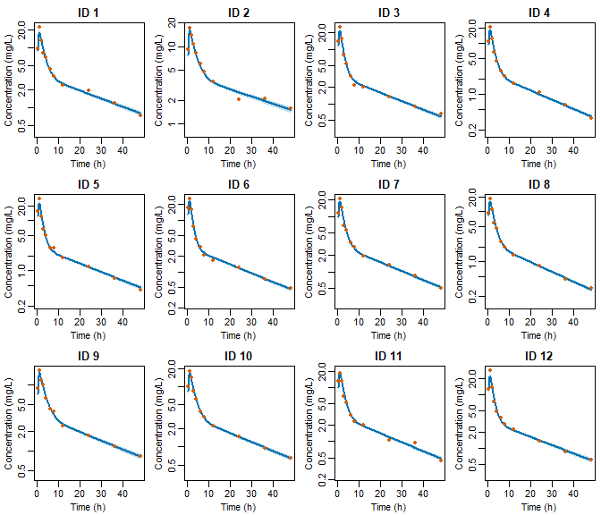
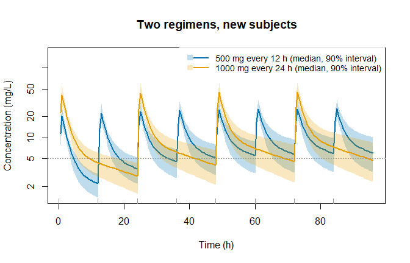

Two-compartment models and regimen comparison
Source:vignettes/two-compartment.Rmd
two-compartment.RmdSimulate an infusion study
pk_conc() uses the same closed-form solutions as the
model, so it can simulate data. Here, 20 subjects receive a 1-hour
infusion of 500 mg (RATE = 500) and are sampled up to 48
hours:
set.seed(1)
truth <- c(CL = 4, V1 = 20, Q = 6, V2 = 60)
times <- c(0.5, 1, 2, 3, 4, 6, 8, 12, 24, 36, 48)
d <- do.call(rbind, lapply(1:20, function(i) {
par <- truth * exp(c(rnorm(2, 0, c(0.3, 0.2)), 0, 0))
conc <- pk_conc(times, dose_regimen(500, rate = 500), par, "2cmt", "iv")
rbind(data.frame(ID = i, TIME = 0, AMT = 500, RATE = 500, DV = NA, EVID = 1),
data.frame(ID = i, TIME = times, AMT = 0, RATE = 0,
DV = conc * (1 + rnorm(length(times), 0, 0.1)), EVID = 0))
}))
head(d)
#> ID TIME AMT RATE DV EVID
#> 1 1 0.0 500 500 NA 1
#> 2 1 0.5 0 0 9.902533 0
#> 3 1 1.0 0 0 22.618118 0
#> 4 1 2.0 0 0 13.303036 0
#> 5 1 3.0 0 0 8.163058 0
#> 6 1 4.0 0 0 6.797243 0Fit
mod2 <- pk_model("2cmt", route = "iv", iiv = c("CL", "V1"), error = "proportional")
fit2 <- bpk_fit(mod2, d, chains = 4, cores = 4, seed = 1)
summary(fit2)
#> variable mean sd q5 q50 q95 rhat ess_bulk ess_tail
#> CL 3.9100 0.20600 3.5800 3.9100 4.260 1.00 7550 3160
#> V1 19.2000 1.19000 17.3000 19.2000 21.300 1.00 6300 3060
#> Q 5.8200 0.12400 5.6100 5.8200 6.020 1.00 7040 3010
#> V2 57.9000 1.17000 56.1000 57.9000 59.900 1.00 6840 2990
#> omega_CL 0.2340 0.04240 0.1780 0.2280 0.314 1.01 573 962
#> omega_V1 0.2620 0.05060 0.1920 0.2560 0.352 1.00 813 1590
#> sigma_prop 0.0966 0.00513 0.0886 0.0964 0.105 1.00 4250 3010The simulated values were CL 4, V1 20, Q 6 and V2 60, with between-subject SDs of 0.3 and 0.2 and a residual SD of 0.1. The fit took 46 seconds.
plot(fit2, log = TRUE, xlab = "Time (h)", ylab = "Concentration (mg/L)")
plot of chunk ind2
Compare regimens
Posterior predictions answer questions such as “which regimen keeps
more new patients above 5 mg/L at the end of the dosing interval?”
predict() returns quantiles. For other summaries, use the
draws (bpk_draws()) with pk_conc().
t <- seq(0, 96, 0.5)
a <- predict(fit2, regimen = dose_regimen(500, ii = 12, n = 8, rate = 500), times = t)
b <- predict(fit2, regimen = dose_regimen(1000, ii = 24, n = 4, rate = 1000), times = t)
plot(a, compare = b, log = TRUE, labels = c("500 mg every 12 h", "1000 mg every 24 h"),
main = "Two regimens, new subjects", xlab = "Time (h)", ylab = "Concentration (mg/L)")
abline(h = 5, col = "#999999", lty = 3)
plot of chunk regimens
Concentrations at 96 hours, the end of the last interval of both regimens (5%, 50% and 95% of new subjects):
Oral two-compartment models and flip-flop
With oral dosing, the absorption rate KA and the fast disposition
rate can swap: two parameter sets then fit the data equally well. If
that happens, bpk_fit() warns that the chains settled in
different regions and shows the chain medians. When absorption is known
to be faster than distribution, ka_faster = TRUE constrains
the typical KA above the disposition rate and removes the second
mode:
Do not use it for drugs whose absorption is slower than distribution (flip-flop kinetics, for example many extended-release forms).